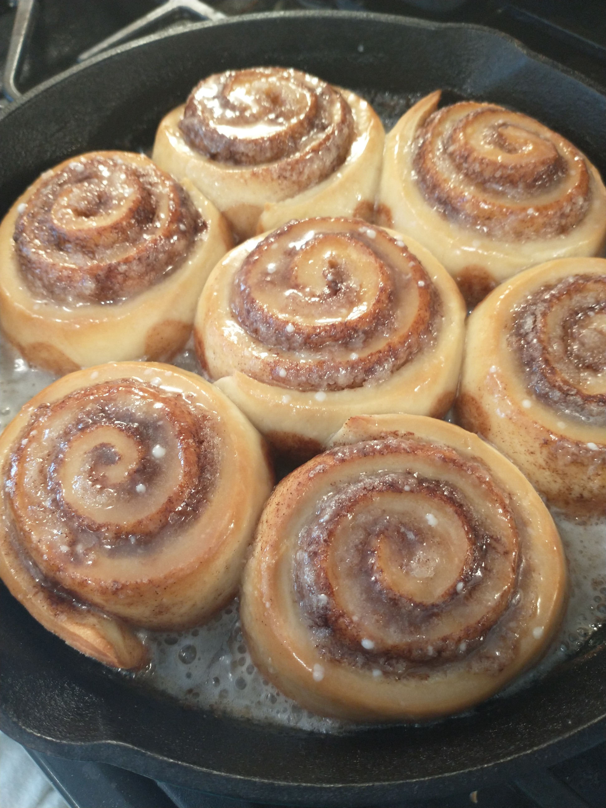

Cinnamon Rolls

Description
This one started with my wife and a Paula Dean recipe.
I got involved helping her roll the dough and cut uniform portions.
It has since become a joint effort to improve both the recipe and our technique.
We always say we will split the recipe and freeze some for later,
but somehow they all get baked and eaten. Some mysteries are not meant to be solved...
Ingredients
- Dough
- 1 Packet Dry Active Yeast
- ½ Cup Warm Water (105°F)
- 1 tsp Sugar
- ½ Cup Warm Milk
- ¼ Cup Sugar
- ⅓ Cup Melted Butter
- 1 tsp Salt
- 1 Large Egg
- 3½-4 Cups All Purpose Flour
- Butter and Sugar for Bottom of Pan
- Filling
- ½ Cup Softened Butter
- ¾ Cups Sugar + 2 Tbsp Cinnamon
- Glaze
- 4 Tbsp Melted Butter
- 2 Cups Powdered Sugar
- 1 Tbsp Vanilla Extract
- 3-6 Tbsp Hot Water
Steps
- Mix warm water, 1 tsp sugar, and yeast in a small bowl. Let sit for 10 mins until foam forms. No foam might mean dead yeast.
- Add warm milk to small bowl and mix.
- In large bowl, add 3½ cups flour and 1 tsp salt. Mix to combine well.
- Make a well in flour mixture and pour in mixture in small bowl.
- Add ¼ cup sugar, ⅓ cup melted butter, and egg to large bowl and mix to combine.
- Cover with a towel and let sit for 60-90 mins.
- Turn out dough on a well floured surface.
- Roll out dough into a 18x12 rectangle.
- Spread softened butter evenly over dough.
- Mix ¾ sugar and 2 Tbsp cinnamon and sprinkle evenly over buttered dough.
- Roll dough along longer edge. Careful not to wrap too tightly or loosely. This can take practice
- Cut dough roll with sharp knife into approximately 16 parts.
- Butter your baking dishes of choice and sprinkle with sugar. I recommend a cast iron skillet.
- Place cut pieces with room to grow and let rise for 30 mins.
- Preheat oven to 350°F.
- Bake for 20-40 mins depending on your oven, pan, and personal color preference.
- Place 2 cups powdered sugar in medium bowl, add 4 Tbsp melted butter, and 1 Tbsp vanilla extract.
- Whisk to combine and add 3-6 Tbsp of hot water until preferred consistency is reached and all lumps are dissolved.
- Remove rolls from oven and pour glaze over each roll immediately.
- Enjoy!
Return to Recipe List